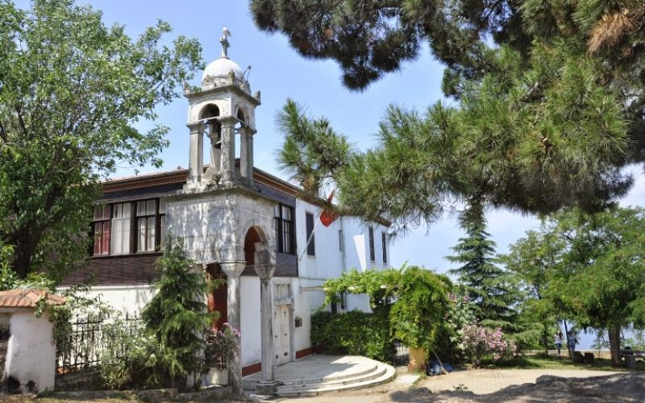
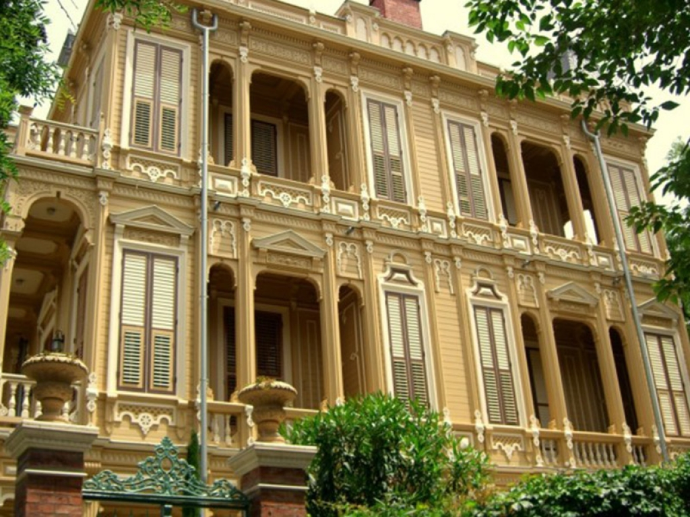
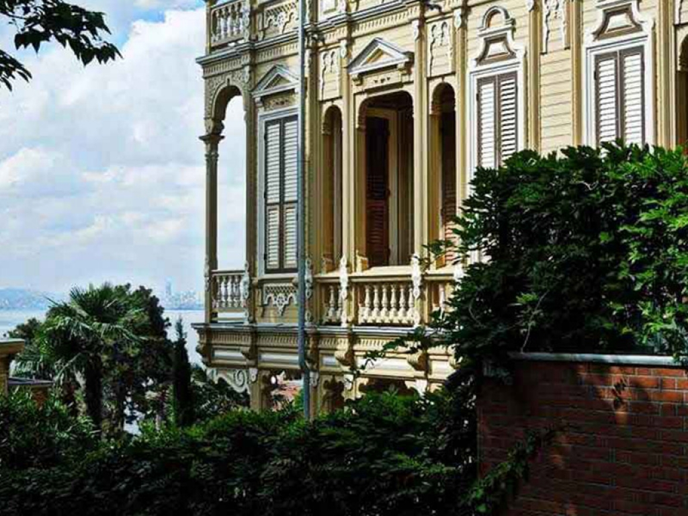
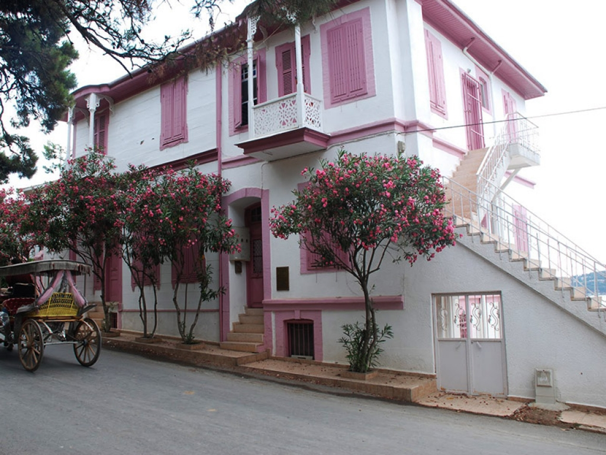

Aya Yorgi Church
Aya Yorgi Church is one of the most popular places in Büyükada. It was started build in 1905 and finished building in 1909.
Con Pasha Mansion
Con Pasha Mansion is the other one of the most popular places in Büyükada. It was build by Con Paşa which was born in mytilene in 1880. The architect of the mansion is Achileus Policis.

Reşat Nuri Gütekin's House
Reşat Nuri Güntekin, Turkish Author, lived here with his family.
